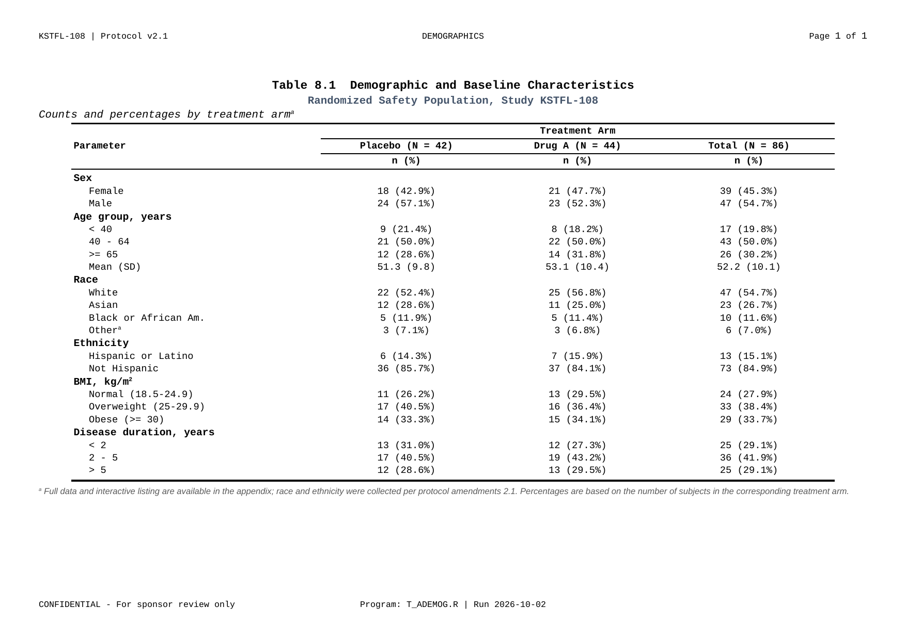
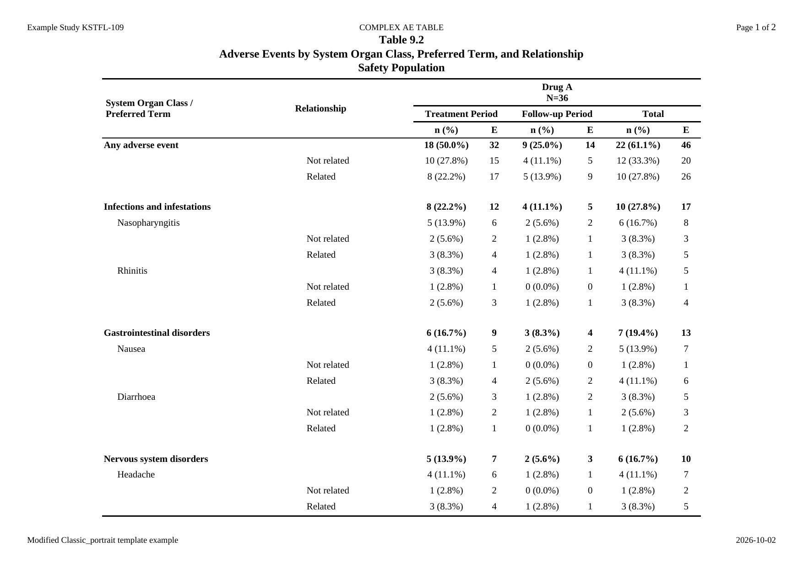
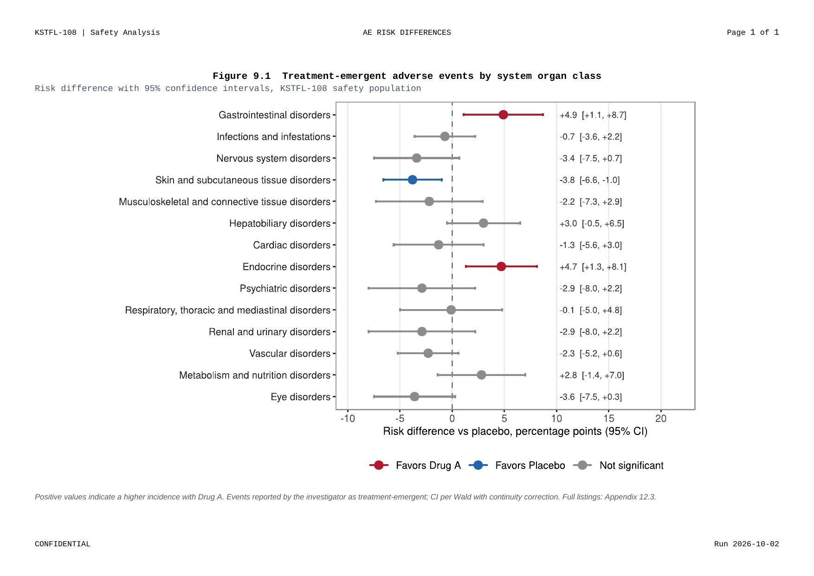
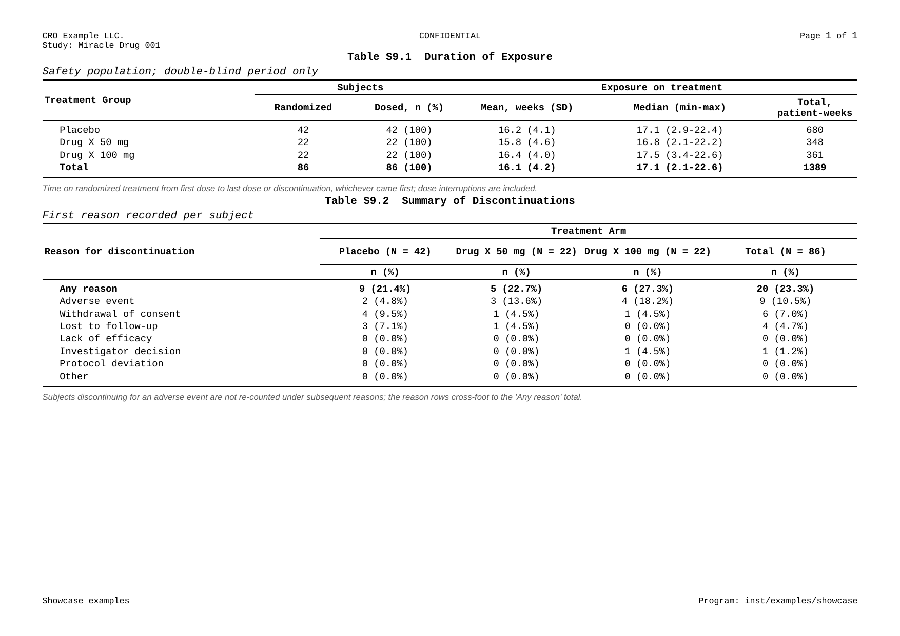
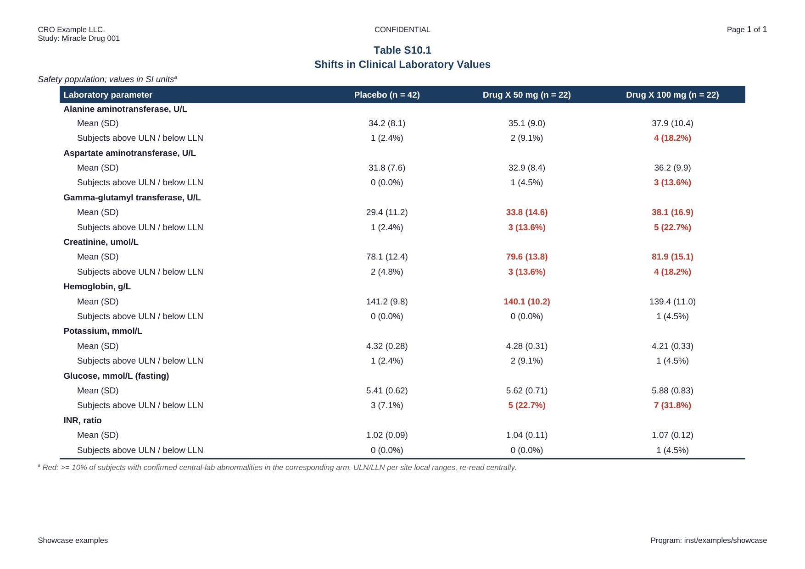
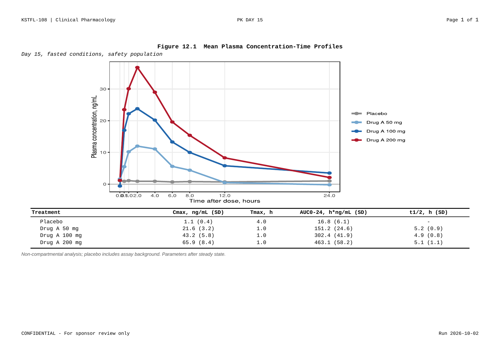

Clinical Tables, Figures, and Listings —
from R code to validated DOCX, in one pipeline.
Why ksTFL
ksTFL is a professional R package designed to fill a long-standing gap in the R ecosystem: the lack of a dedicated, end-to-end solution for producing well-formatted, regulatory-compliant clinical Tables, Figures, and Listings (TFLs). While R excels at statistical analysis, generating submission-quality DOCX outputs that meet pharmaceutical industry standards has traditionally required fragile workarounds or external tooling. ksTFL solves this by distilling the best ideas from existing reporting solutions into a simple, minimalistic, yet highly flexible declarative language — a compact set of composable functions whose combinations can produce virtually any clinical output format.
The core philosophy is data–presentation separation: input data stays clean and planar, free of reporting artefacts such as merged cells, indentation columns, or display-only rows. Formatting, pagination, grouping, and styling are declared independently and applied at render time. This keeps datasets maintainable, traceable, and validation-ready — exactly what regulated environments demand.
Under the hood, a built-in rendering engine with text shaping converts declarative specs into styled DOCX documents with deterministic, pixel-perfect pagination. Rendering is extremely fast even on large datasets, making ksTFL practical for batch production of hundreds of outputs in a single pipeline run.
Key design principles
- Separation of concerns — metadata generation (R) is decoupled from document rendering; input data remain clean and analysis-ready
- Declarative syntax — describe what to render, not how to render it; a small function vocabulary covers the full range of clinical outputs
- Deterministic pagination — font shaping guarantees pixel-perfect, reproducible layouts and page breaks
- High performance — the C++ engine renders large multi-spec reports in seconds
- Type safety — comprehensive input validation with informative error messages
- Reproducibility — specifications are serializable, so stored metadata can be replayed years later without re-running the analysis pipeline
What the output looks like
Five verbs stand between a data frame and a submission-ready document:
create_*() -> define / add_* / compute_* -> create_report() -> write_doc() -> .docx
specify style & compose validate & merge renderNo external tools, no Word macros, no “final_v7_reallyfinal.docx”. Every page below was rendered by ksTFL itself from short, commented example programs. Click any page to open it full size.






Quick start
This script is all it takes — and yes, iris really is enough:
library(ksTFL)
# any messy source becomes one tidy summary frame - your usual R, nothing exotic
summary <- do.call(rbind, lapply(split(iris, iris$Species), function(g)
data.frame(Species = g$Species[1], N = nrow(g),
SL_mean = mean(g$Sepal.Length), SL_sd = sd(g$Sepal.Length),
PL_mean = mean(g$Petal.Length), PL_sd = sd(g$Petal.Length))))
spec <- create_table(summary) |>
add_span_header(c(SL_mean, SL_sd), "Sepal", stubOrder = 1) |>
add_span_header(c(PL_mean, PL_sd), "Petal", stubOrder = 1) |>
define_cols(c(SL_mean, PL_mean),
label = c("mean", "mean"), valueStyleRef = "ar", format = "%.2f") |>
compute_cols(PL_mean < 2.5,
c_style(c(PL_mean, PL_sd), styleRef = f_combine("fc_green", "b"))) |>
add_title("Iris, Measured Flower by Flower", styleRef = "b") |>
add_footnote("Fisher (1936). Green: petals so distinct the species name themselves.") |>
set_document(contentWidth = "70%")
write_doc(create_report(spec), name = "iris_summary")That’s a print-ready Word document — but look at what the lines actually did:
-
Two lines grouped the columns under
SepalandPetalbanners. Real reports live on this kind of hierarchy — you just declared it, no merged-cell surgery in Word. -
One line set the number style for both
meancolumns at once: right-aligned, exactly two decimals. It applies to whatever those columns become later; the format rides with the definition, not the data. -
One line painted setosa’s petals green —
compute_cols(condition, action)is a rule, not a manual edit: any row where mean petal length falls below 2.5 gets the style, now and in every future run of this pipeline. The rule reads like a sentence because ksTFL evaluates it like one. -
The document framed itself: title, footnote, a 70%-width body — all part of the same object;
write_doc()drops the.docxinto your working directory and that’s the end of your involvement.
Run the script, open the file, compare it with the screenshot — that gap between “analysis finished” and “report ready” you’ve been living with? Just closed.
Installation
ksTFL ships pre-compiled binaries for R 4.5 and R 4.6 on Windows, Ubuntu/Debian, Fedora/RHEL, and macOS (ARM) — no compilers or system libraries needed for most users.
The simplest method, works on every platform:
install.packages("ksTFL",
repos = c("https://crow16384.r-universe.dev", "https://cloud.r-project.org"))Windows binaries are also available directly:
install.packages("ksTFL",
repos = "https://crow16384.github.io/ksTFL-release",
type = "binary")Or download finished packages (.zip, .tar.gz, .tgz) from the release repository and install with install.packages(file, repos = NULL).
Building from source requires a C++20 compiler and R development tools (Rtools on Windows, Xcode Command Line Tools on macOS, build-essential on Linux):
remotes::install_github("crow16384/ksTFL")What else it can do
- One look for the whole company. Corporate layouts come built in — pick a template and every table, figure and listing in the run instantly wears the same face: same fonts, same margins, same navy header. Hand a client a submission where nothing drifts from page to page.
- It writes around your missing fonts. The package reads the fonts on your machine and quietly substitutes a metric-compatible open-source one when a proprietary font (Arial, Times New Roman, …) isn’t there. The report lays out the same whether you ran it on your laptop or on a Linux build server.
- A report that re-builds itself. Every output saves its specification, so you can regenerate the exact same Word document months later, on another machine, without touching the original analysis. Auditors love this; so do you, at 2 a.m. before a submission.
- Highlight what matters, by rule. Color a cell red when a value crosses a threshold, bold the first row of every group, drop a section header where the category changes — described once, applied forever, never by hand in Word.
-
Rich text inside cells. Bold, italic, superscripts, subscripts and line breaks right in your values and titles (
H<sub>2</sub>O,p<0.05<sup>*</sup>), the way the final document needs them. - Point and click, if you like. RStudio add-ins give you a template editor and a style picker, so you can compose layouts visually instead of memorizing option names.
- Any language, all at once. Cyrillic, CJK, Greek letters and ordinary text share a page without turning into boxes.
Documentation & resources
| I want to… | Go to |
|---|---|
| Learn the workflow in one sitting | Getting Started |
| Solve a specific problem | FAQ & Troubleshooting |
| See real examples, table by table | Real Examples and the examples repository |
| Fine-tune colors, fonts, borders | Styling Guide |
| Look up any function | Reference |
| Print a cheat sheet | Cheatsheet (PDF) |
| Give a talk | Slides (PDF) |
License. GPL-3. Authors. Igor Aleschenkov, Vladimir Larchenko — ksTFL Team ©